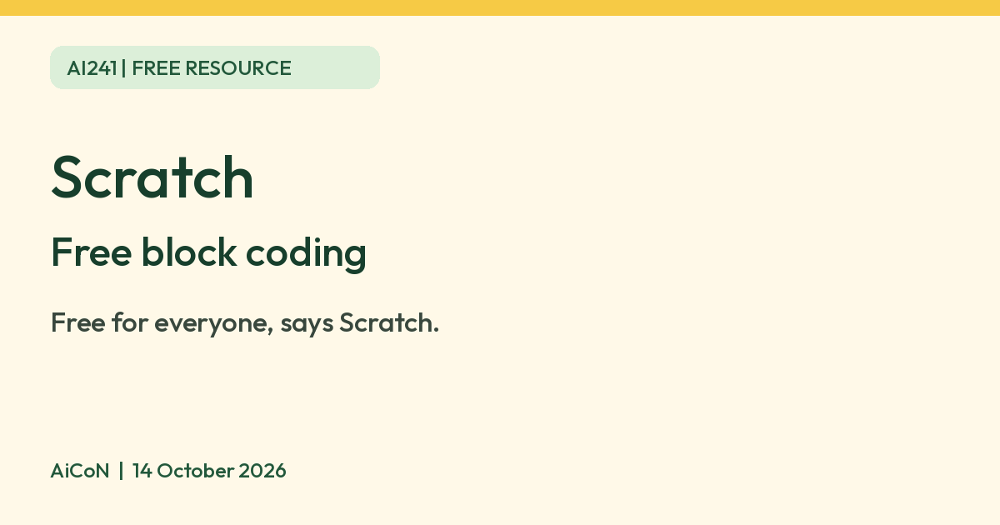

Scratch: free block coding for games and animations
Scratch says it is free for everyone. You build games and animations from code blocks in a browser, and under-16s need parent permission to register.

What it is
Scratch is a free way to make your own interactive stories, games and animations by snapping together code blocks. Its help page says "With Scratch, you can program your own interactive stories, games, and animations — and share your creations with others in the online community." It is run by the Scratch Foundation, a nonprofit. It is not an AI tool. We included it because it is a free educational resource from an official source.
Is it free?
Yes. Scratch's own site says "Scratch is free for everyone. Supporters make that possible." Its parents page also says it is provided for free. We found no paid tier on the pages we read.
Which devices
- The online editor runs in a web browser. A Scratch wiki page says it needs Chrome 63, Edge 15, Firefox 57 or Safari 11 or newer. That is a community wiki, not the official site.
- The official download page offers a free Scratch app for Windows 10+, macOS 10.13+, ChromeOS and Android 6.0+. It says the Android version "only works on tablets", not phones. It also says the direct Windows download is temporarily unavailable, and that you can get the app from the Microsoft Store.
Accounts, age and privacy
- Scratch's parents page says it is designed mainly for ages 8 to 16 and is also used by people of all ages.
- A Scratch announcement says anyone under 16 who registers a new account needs permission from a parent or guardian. It says unverified accounts can still make and save projects, but cannot comment or share. We read that announcement on the Scratch forum, which is a post by the Scratch Team, and did not check whether the rules changed after it.
- The parents page says Scratch limits what it collects at sign-up, does not sell or rent account information, and does not make private account information available to anyone.
- Scratch is an online community where people share projects. Read the community guidelines before letting a child post.
India
- We found no India-specific statement. We did not check which languages the editor offers or whether an Indian parent-permission process differs.
Frequently asked questions
Is Scratch free?
Yes. Scratch says it is free for everyone.
Does it work on a phone?
The online editor runs in a browser. The Android app only works on tablets, says the download page.
Is it AI?
No. It is a coding tool. We included it because it is a free educational resource from an official source.
Sources: About Scratch, Parents page, Download, Account registration announcement. Checked 14 October 2026. Independent guide, not affiliated. No Scratch logo is used: Scratch says its logo and characters are trademarks.